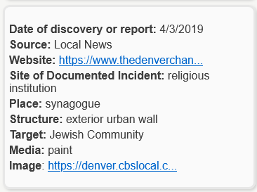
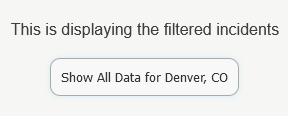

You may change the layer by clicking on the 'Layers' button on the left side of the screen (on the top portion if using mobile). There are two different types of layers: Demographic and Electoral. Demographic allows you to see demographic information such as the percent of white population per state, or the number of reported incidents per 100,000 people. The electoral layers allow you to view the majority votes for Democratic and Republican parties by county.
You may filter the points by clicking on the 'Filter Incidents' button on the left side of the screen (on the top portion if using mobile)
You can filter by: category of place (such as schools or private residence), the source of the incident (such as national or local news), the type of media used
(such as paint or ink), and the target of the incident (such as Jewish communities or African-American communities).
At the bottom of the 'Filter Incidents' menu, there is a time slider which allows you to filter
the incidents by a selected time range. Simply select either end of the time range and drag it to your desired filter.
When using these features, you may filter the incidents on the map which will allow you to see these incidents with more precision.
You may also select more than 1 filter and a color coded legend will help identify the filters that you have applied.
You can reset all of the filters by clicking on the 'Reset Filters' button on the top right portion of the 'Filter Incidents' menu.
To remove a certain filters, you may either click on the filter at the top portion of the filtering menu, under the 'Applied Filters'. You can also click on the filter itself under it's designated category.
If you have applied filters onto the map, the filters will be designated by the outline on the points below.
For example, let's say that we have applied two filters: one for the “Category of Place” as college campuses and another as the “Source” of the incident as a student newspaper.
As you can see in this example, the filters that are applied are indicated by the the color of the surrounding outlines of the city in which both of these incidents occur.
The red outline indicates that a swastika has been reported on a college campus, and the blue outline indicates that there is a swastika incident reported by a student newspaper.
In addition, the time slider will filter the points and only show the incidents that are within the desired time range.
Simply click on the desired city and the reported incidents within the desired city will be visible on the right hand side of the screen (if you are using a desktop computer).
You can view information for each incident (such as the date of the incident, the place of the incident, or the target). If an image is available, a link will be provided. See the example below:
If you have applied a filter you may see this on the top portion of the window:
If you would like to view all of the incidents, please click on "Show All Data for City, State" to view every incident within this city.
You can view more demographic information by clicking on the state. As you hover over a state, it will highlight and you may click on the state to view more detailed demographic information such as population density and population demographics.
You may find more information and resources regarding this project at https://theswastikacounter.org/.
This interactive map was developed by Jason Miller, a former geography student at the University of Colorado Boulder, and his professor Dr. Morteza Karimzadeh, in efforts to help visualize data collected by Dr. Laurie Gries and Dr. Kelly L. Wheeler and their contributors.
For more info, please visit The Swastika Counter project at https://theswastikacounter.org/.